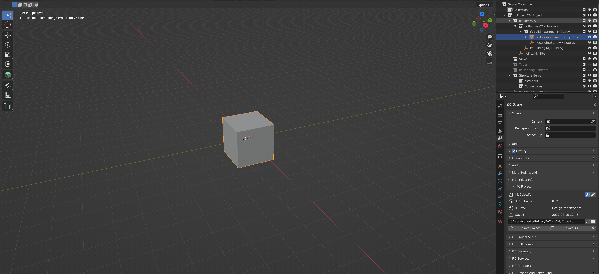

Updating EdgeDB with local IFC changes#
In order to effectively update the EdgeDB database good diffing mechanism on local IFC content is required.
That way you only send the modifications made to specific elements in your local IFC content
(as opposed to replacing the entire database).
To combat this I’ve created an IfcDiffTool class (inspired by
IfcDiff) in order to do a comparison of 2
ifcopenshell.file objects and do an element-by-element comparison using deepdiff for all rooted elements
(recursively) resulting in 3 types of diff result lists; changed, removed & added.
The general idea of the IfcDiffTool is to be able to apply the instantiated IfcDiffTool after it is finished with
diffing onto the original IFC file object or onto an EdgeDB database in order to apply the changes.
Also enable so that the results from the IfcDiffTool can be exported/imported into a json file/format.
That way it is easy to send diffs to/from REST api’s that in turn updates the database.
Diffing example 1 -> Basic Edit of a Blender Cube#
The original Cube (shown below) is exported to the first IFC file

Then I stretch the Cube (as shown below) in the Z-direction and save it in a second IFC file
I then run the IfcDiffTool on these two files like so
from ifcdb.diffing.tool import IfcDiffTool
import ifcopenshell
my_cube = ifcopenshell.open('cube_original.ifc')
my_cube_edited = ifcopenshell.open('cube_edited.ifc')
diff_tool = IfcDiffTool(my_cube, my_cube_edited)
assert len(diff_tool.changed) == 1
assert len(diff_tool.added) == 0
assert len(diff_tool.removed) == 0
diff_tool.to_json_file('diff.json')
The json contents of the diff.json file looks like this
{
"changed": [
{
"diff": {
"values_changed": {
"root['Representation']['Representations'][0]['Items'][0]['Position']['Location']['Coordinates'][2]": {
"new_value": -5.68906497955322,
"old_value": -1.0
},
"root['Representation']['Representations'][0]['Items'][0]['Position']['RefDirection']['DirectionRatios'][0]": {
"new_value": -1.0,
"old_value": 1.0
},
"root['Representation']['Representations'][0]['Items'][0]['Depth']": {
"new_value": 11.3781298010066,
"old_value": 2.0
},
"root['Representation']['Representations'][1]['Items'][0]['Corner']['Coordinates'][2]": {
"new_value": -5.68906497955322,
"old_value": -1.0
},
"root['Representation']['Representations'][1]['Items'][0]['ZDim']": {
"new_value": 11.3781299591064,
"old_value": 2.0
}
}
},
"guid": "3vJeEVZYzA3vP81uCmY9l4",
"class_name": "IfcBuildingElementProxy"
}
],
"added": [],
"removed": []
}
Now this json content describes the entire difference between the new and original IFC file.
It’s interesting to note that the size of the json diff file is 832 bytes, while the new IFC file is 3 442 bytes. That’s a difference in size of a factor of > 4 on a very small IFC file to begin with. When considering sending messages between client and database, the size of data packages would optimally be as small as possible. Consequently, a “differences only” approach for message content would probably the most practical approach.
However, by inspecting the contents of this json file, the first real issue with this strategy starts to appear. This will be further explained in the following section.
The issue of tracking differences in IFC files and unordered lists#
In the changed element diff dictionary the path to the first changed property is
root['Representation']['Representations'][0]['Items'][0]['Position']['Location']['Coordinates'][2]
The path itself is perfectly resolvable, however it is the numerical index=0 of the Items
SET that pose a problem.
Here’s the EXPRESS definition of IfcProductRepresentation which defines the Representations list
ENTITY IfcProductRepresentation
ABSTRACT SUPERTYPE OF (ONEOF
(IfcMaterialDefinitionRepresentation
,IfcProductDefinitionShape));
Name : OPTIONAL IfcLabel;
Description : OPTIONAL IfcText;
Representations : LIST [1:?] OF IfcRepresentation;
END_ENTITY;
while the IfcRepresentation describes the Items set
ENTITY IfcRepresentation
ABSTRACT SUPERTYPE OF (ONEOF
(IfcShapeModel
,IfcStyleModel));
ContextOfItems : IfcRepresentationContext;
RepresentationIdentifier : OPTIONAL IfcLabel;
RepresentationType : OPTIONAL IfcLabel;
Items : SET [1:?] OF IfcRepresentationItem;
INVERSE
RepresentationMap : SET [0:1] OF IfcRepresentationMap FOR MappedRepresentation;
LayerAssignments : SET [0:?] OF IfcPresentationLayerAssignment FOR AssignedItems;
OfProductRepresentation : SET [0:?] OF IfcProductRepresentation FOR Representations;
END_ENTITY;
The Item points to a set of IfcRepresentationItem which is defined like this
ENTITY IfcRepresentationItem
ABSTRACT SUPERTYPE OF (ONEOF
(IfcGeometricRepresentationItem
,IfcMappedItem
,IfcStyledItem
,IfcTopologicalRepresentationItem));
INVERSE
LayerAssignment : SET [0:1] OF IfcPresentationLayerAssignment FOR AssignedItems;
StyledByItem : SET [0:1] OF IfcStyledItem FOR Item;
END_ENTITY;
In the IFC schema a LIST is ordered while a SET is unordered.
Assuming there are multiple entities in the Items SET, these paths
can point to a different entities for each time you load the IFC files in-memory. Consequently, when trying to apply
this change to the IFC Database it is not certain that you are trying to apply the change on the correct entity.
If the IfcRepresentationItem had some kind of unique marker in its attributes, then one might use that as an
identifier, but unfortunately IfcRepresentationItem is not a “rooted” element and has therefore not a GlobalId.